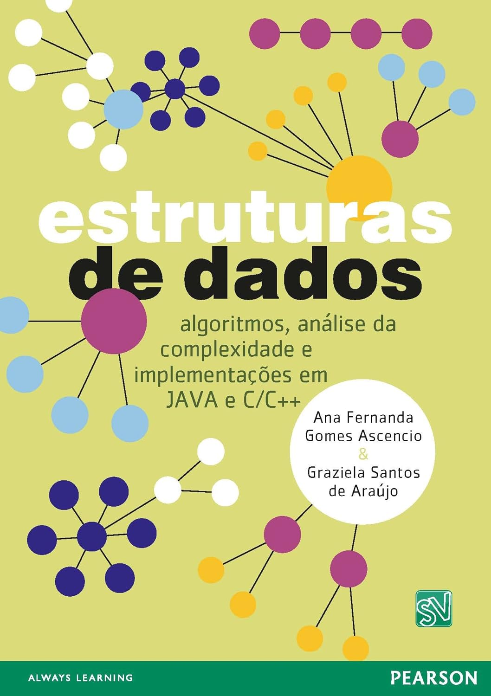
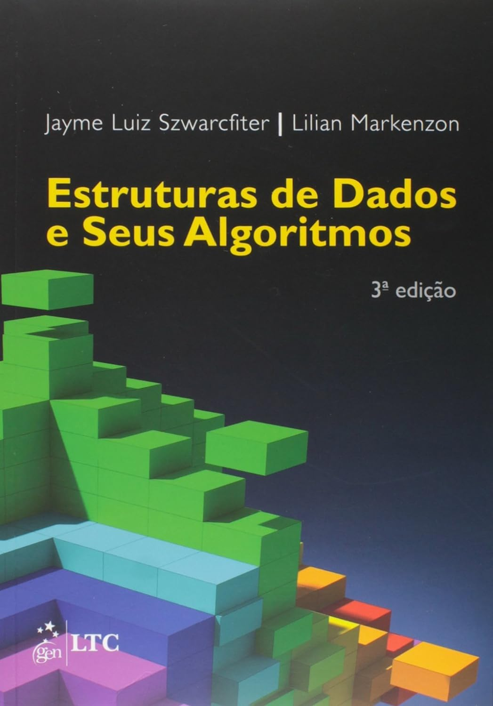
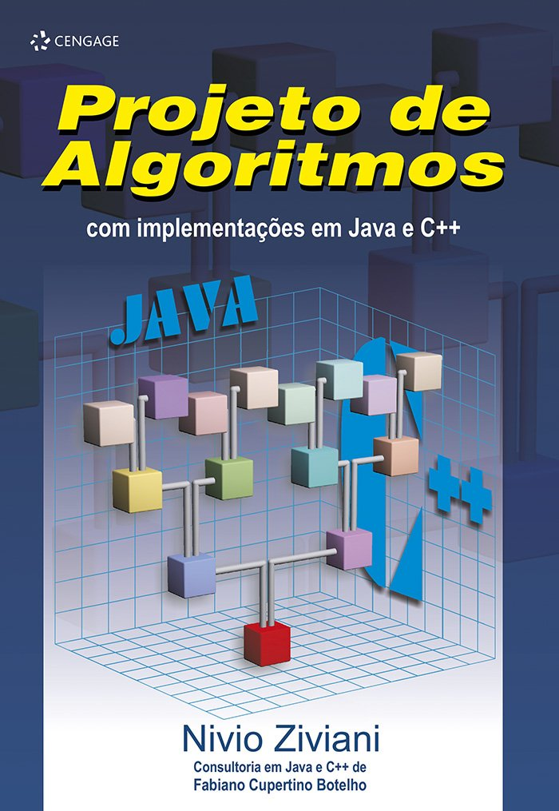

Bibliografia
Recomendada
-

ASCENCIO, A. F. G. Estrutura de Dados. São Paulo: Pearson, 2011. 448 p.
-

SZWARCFITER, J. L.; MARKENZON, L. Estruturas de Dados e Seus Algoritmos. 3ª ed. Rio de Janeiro: LTC, 2010. 318 p.
-

ZIVIANI, N. Projeto de Algoritmos com Implementações em Java e C++. São Paulo: Thomson Learning, 2006. 642 p.
Complementar
- TOSCANI, L. V.; VELOSO, P. A. S. Complexidade de Algoritmos – Vol. 13. 3ª ed. Porto Alegre: Bookman, 2012. 280 p. (Série de livros didáticos em informática – UFRGS).
- LOPES, A.; GARCIA, G. Introdução à Programação. Rio de Janeiro: Campus, 2002. 488 p.
- DEITEL, P.; DEITEL, H. C: Como Programar. 6ª ed. São Paulo: Pearson, 2007. 848 p.
- TENENBAUM, A. M.; LANGSAM, Y.; AUGENSTEIN, M. J. Estruturas de Dados Usando C. São Paulo: Makron Books, 1995. 904 p.
- MIZRAHI, V. V. Treinamento em Linguagem C. 2ª ed. São Paulo: Prentice-Hall, 2008. 432 p.